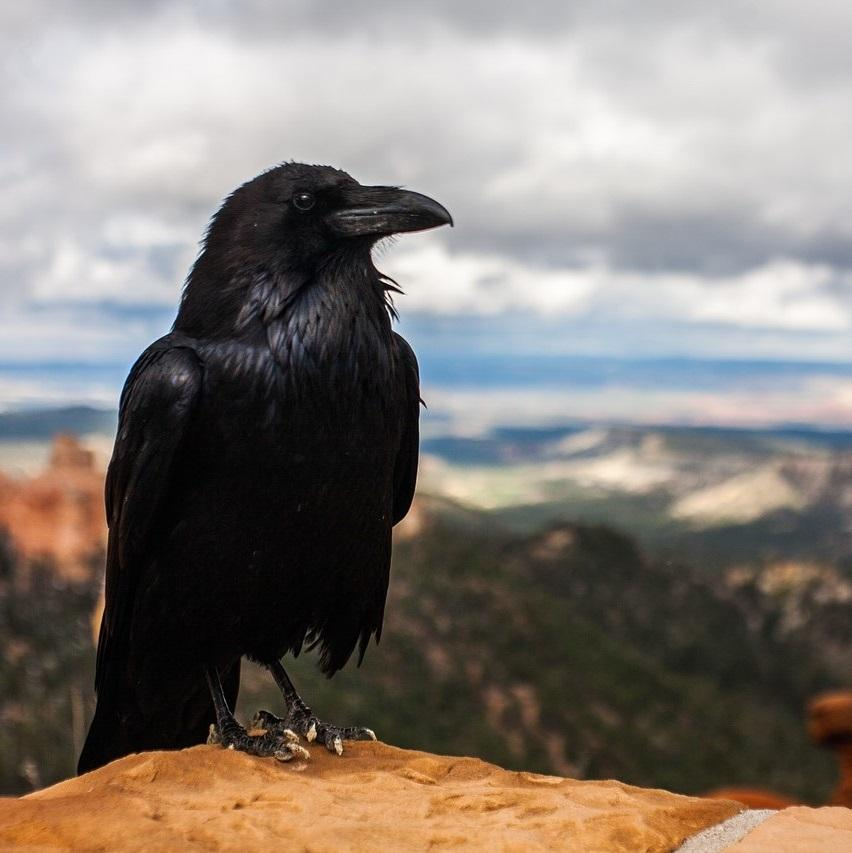

Cuervo
(Corvus corax)

El cuervo grande (Corvus corax), anteriormente denominado cuervo común por la SEO, es una especie de ave paseriforme de la familia Corvidae. Presente en todo el hemisferio septentrional, es la especie de córvido con la mayor superficie de distribución. A pesar de ello, la corneja negra (Corvus corone), de menor tamaño aunque muy similar en su aspecto morfológico externo, es muy abundante en sus propias áreas de distribución, por lo que a menudo se confunde a las cornejas negras con cuervos grandes. Con el cuervo de pico grueso, el cuervo grande es el mayor de los córvidos y probablemente la paseriforme más pesada; en su madurez, el cuervo grande mide entre 52 y 69 cm de longitud y su peso varía de 0,69 a 1,7 kg.
Las plumas en la garganta del cuervo grande guardan ciertas similitudes con los pelos de una barba, lo cual le da un aire muy serio.
viven en pareja de por vida y la hembra es de menor tamaño.
Los investigadores han realizado múltiples pruebas de lógica e inteligencia con cuervos, y los resultados han sido sorprendentes.
Pueden facilmente sortear las adversidades, es que comen de todo, son omnívoros.
Se halla difundida por todo el mundo, excepto Nueva Zelanda, algunas islas de Polinesia y las regiones polares.
REGRESAR AL MENU